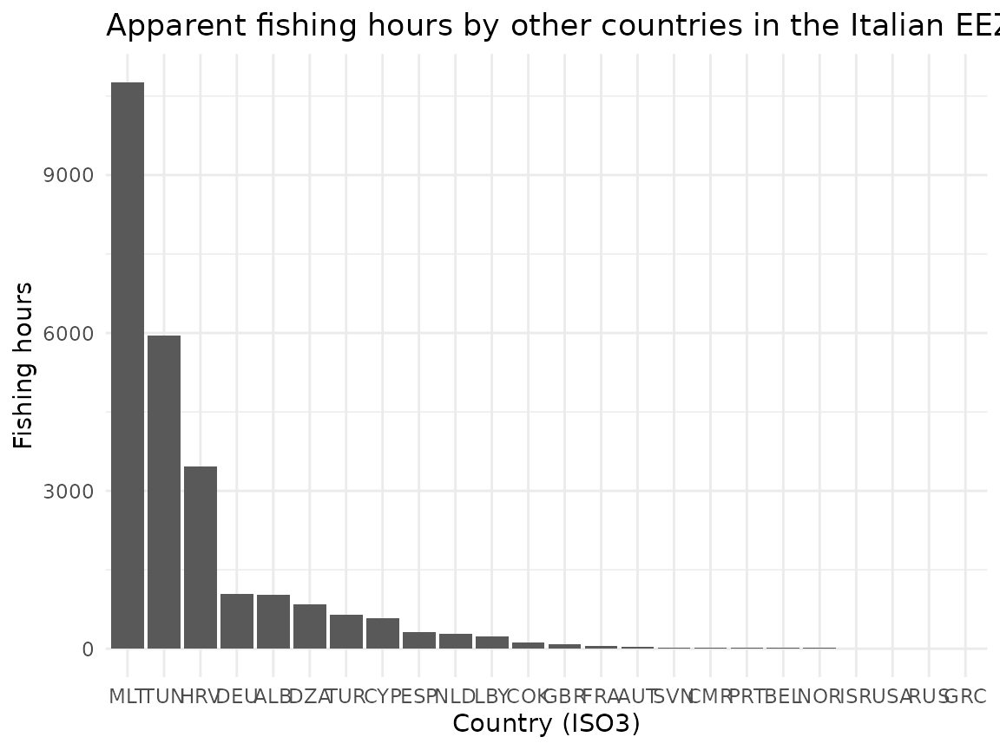
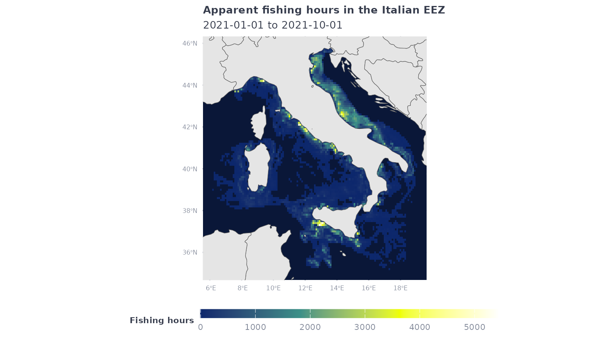
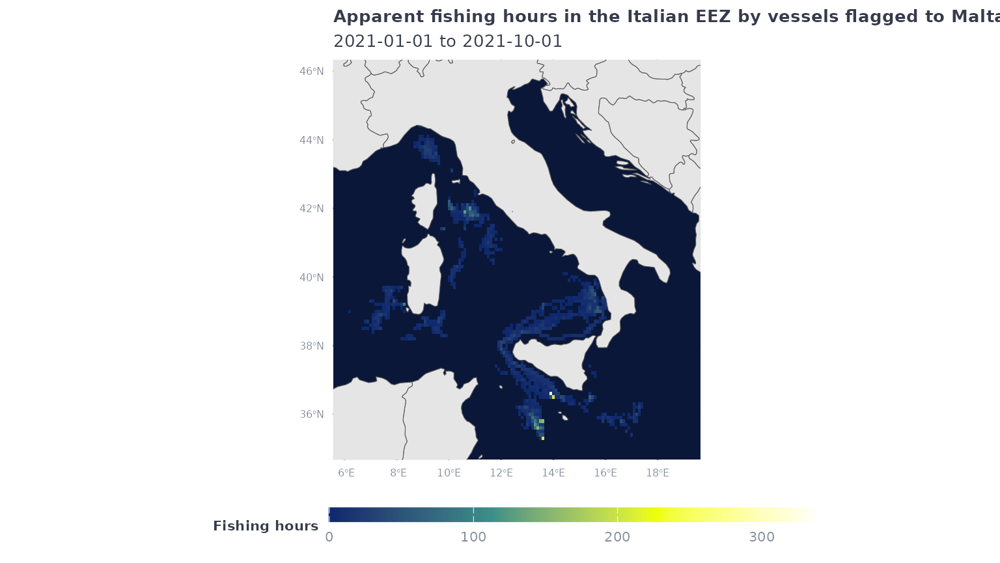
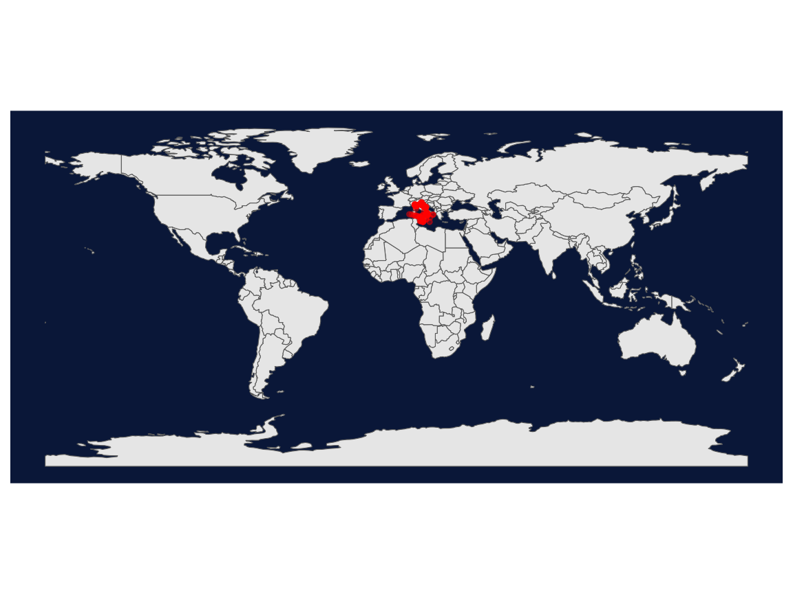
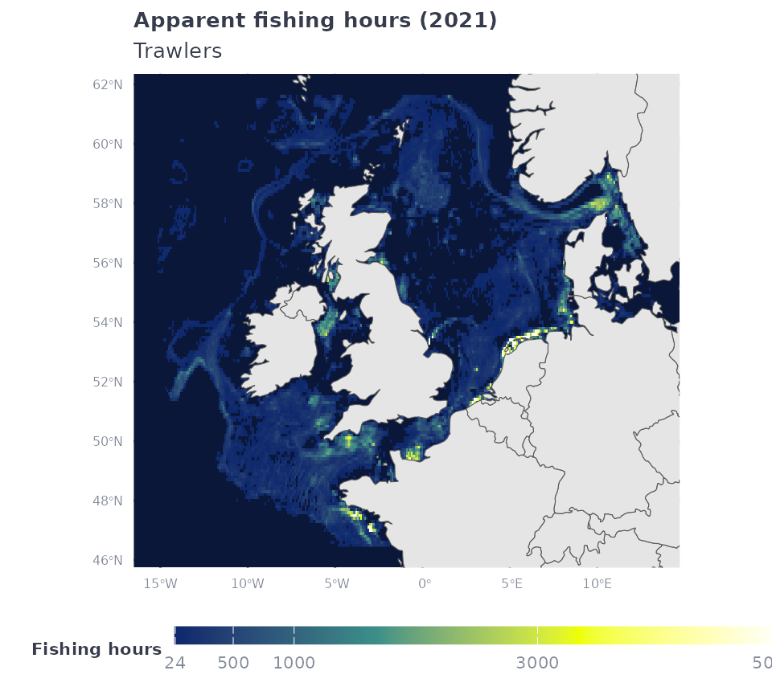
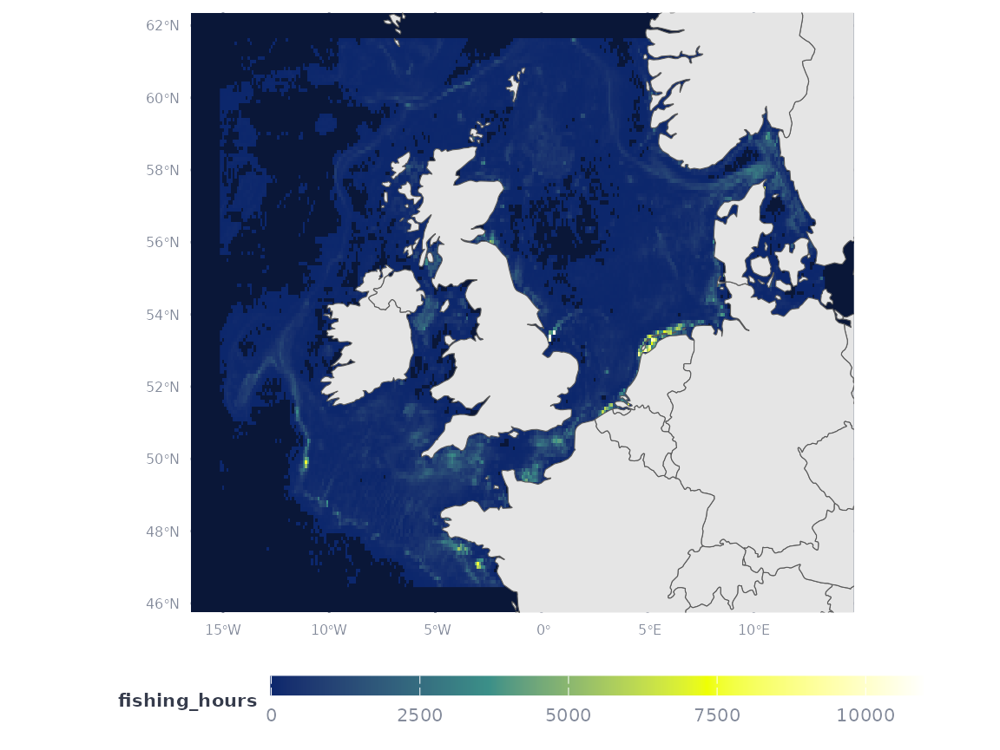

A powerful feature of gfwr is the ability to get data
for making custom maps of apparent fishing effort and vessel activities.
This vignette demonstrates how to combine multiple gfwr
functions with ggplot2 and sf to make a
variety of maps of fishing vessel activity.
Specifically, this vignette will show how to make maps of:
First, load gfwr.
#> ℹ Loading gfwrFor this vignette, we’ll also use some additional packages for
plotting (ggplot2,sf) and reference data
(rnaturalearth)
library(tidyverse)
#> ── Attaching core tidyverse packages ──────────────────────── tidyverse 2.0.0 ──
#> ✔ dplyr 1.1.4 ✔ readr 2.1.5
#> ✔ forcats 1.0.0 ✔ stringr 1.5.1
#> ✔ ggplot2 3.5.1 ✔ tibble 3.2.1
#> ✔ lubridate 1.9.3 ✔ tidyr 1.3.1
#> ✔ purrr 1.0.2
#> ── Conflicts ────────────────────────────────────────── tidyverse_conflicts() ──
#> ✖ dplyr::filter() masks gfwr::filter(), stats::filter()
#> ✖ dplyr::lag() masks stats::lag()
#> ✖ lubridate::make_datetime() masks gfwr::make_datetime()
#> ℹ Use the conflicted package (<http://conflicted.r-lib.org/>) to force all conflicts to become errors
# Map theme with dark background
map_theme <- ggplot2::theme_minimal() +
ggplot2::theme(
panel.border = element_blank(),
panel.background = element_rect(fill = "#0a1738", color = NA),
legend.position = "bottom", legend.box = "vertical",
legend.key.height = unit(3, "mm"),
legend.key.width = unit(20, "mm"),
legend.text = element_text(color = "#848b9b", size = 8),
legend.title = element_text(face = "bold", color = "#363c4c", size = 8, hjust = 0.5),
plot.title = element_text(face = "bold", color = "#363c4c", size = 10),
plot.subtitle = element_text(color = "#363c4c", size = 10),
axis.title = element_blank(),
axis.text = element_text(color = "#848b9b", size = 6),
panel.grid.major = element_line(color = "#0a1738"),
panel.grid.minor = element_line(color = "#0a1738"))
# Palette for fishing activity
map_effort_dark <- c("#0c276c", "#3b9088", "#eeff00", "#ffffff")To get activity for a specific EEZ, we first use the
get_region_id() function to find the id of our
EEZ of interest using the EEZ ISO3 code. Note that, for some countries,
the ISO3 code will return multiple regions
# Use get_region_id function to get EEZ code for Italy
code_eez <- get_region_id(region_name = "ITA", region_source = "EEZ", key = gfw_auth())#> # A tibble: 1 × 3
#> id label iso3
#> <dbl> <chr> <chr>
#> 1 5682 Italy ITA
# Download data for the Italian EEZ
eez_fish_df <- get_raster(spatial_resolution = "LOW",
temporal_resolution = "YEARLY",
group_by = "FLAG",
start_date = "2021-01-01",
end_date = "2021-10-01",
region = code_eez$id,
region_source = "EEZ")
#> Rows: 5580 Columns: 6
#> ── Column specification ────────────────────────────────────────────────────────
#> Delimiter: ","
#> chr (1): flag
#> dbl (5): Lat, Lon, Time Range, Vessel IDs, Apparent Fishing Hours
#>
#> ℹ Use `spec()` to retrieve the full column specification for this data.
#> ℹ Specify the column types or set `show_col_types = FALSE` to quiet this message.#> # A tibble: 5,580 × 6
#> Lat Lon `Time Range` flag `Vessel IDs` `Apparent Fishing Hours`
#> <dbl> <dbl> <dbl> <chr> <dbl> <dbl>
#> 1 44.1 8.3 2021 ITA 3 670.
#> 2 43.7 7.7 2021 ITA 7 488.
#> 3 44 8.3 2021 ITA 5 394.
#> 4 43.8 8.1 2021 ITA 6 470.
#> 5 43.9 8.1 2021 ITA 4 32.1
#> 6 43.8 8.2 2021 ITA 5 171.
#> 7 43.8 7.8 2021 ITA 8 293.
#> 8 43.8 7.9 2021 ITA 8 615.
#> 9 43.7 7.9 2021 ITA 7 127.
#> 10 44.4 8.6 2021 ITA 7 49.2
#> # ℹ 5,570 more rowsIf we summarize the data by the flag variable, we can
see how much activity occurred in the Italian EEZ by vessels from
different flag states.
eez_fish_df %>%
group_by(flag) %>%
summarize(fishing_hours = sum(`Apparent Fishing Hours`, na.rm = T)) %>%
arrange(desc(fishing_hours))
#> # A tibble: 26 × 2
#> flag fishing_hours
#> <chr> <dbl>
#> 1 ITA 1377221.
#> 2 MLT 10762.
#> 3 TUN 5951.
#> 4 HRV 3460.
#> 5 DEU 1042.
#> 6 ALB 1026.
#> 7 DZA 839.
#> 8 TUR 645.
#> 9 CYP 580.
#> 10 ESP 317.
#> # ℹ 16 more rows
eez_fish_df %>%
filter(flag != "ITA") %>%
group_by(flag) %>%
summarize(fishing_hours = sum(`Apparent Fishing Hours`, na.rm = T)) %>%
ggplot() +
geom_col(aes(x = forcats::fct_reorder(flag, desc(fishing_hours)),
y = fishing_hours)) +
labs(title = "Apparent fishing hours by other countries in the Italian EEZ",
y = "Fishing hours",
x = "Country (ISO3)") +
theme_minimal()
Because the data includes fishing by all flag states, to make a map of all activity, we first need to summarize activity by grid cell.
eez_fish_all_df <- eez_fish_df %>%
group_by(Lat, Lon) %>%
summarize(fishing_hours = sum(`Apparent Fishing Hours`, na.rm = T))
#> `summarise()` has grouped output by 'Lat'. You can override using the `.groups`
#> argument.Now we can use ggplot2 to plot the data:
eez_fish_all_df %>%
ggplot() +
geom_raster(aes(x = Lon,
y = Lat,
fill = fishing_hours)) +
geom_sf(data = ne_countries(returnclass = "sf", scale = "medium")) +
coord_sf(xlim = c(min(eez_fish_all_df$Lon),max(eez_fish_all_df$Lon)),
ylim = c(min(eez_fish_all_df$Lat),max(eez_fish_all_df$Lat))) +
scale_fill_gradientn(colors = map_effort_dark, na.value = NA) +
labs(title = "Apparent fishing hours in the Italian EEZ",
subtitle = "2021-01-01 to 2021-10-01",
fill = "Fishing hours") +
map_theme
If we’re instead interested in just the fishing activity of a single flag state, we can simply filter the original dataframe to that flag and plot:
eez_fish_df %>%
filter(flag == "MLT") %>%
ggplot() +
geom_tile(aes(x = Lon,
y = Lat,
fill = `Apparent Fishing Hours`)) +
geom_sf(data = ne_countries(returnclass = "sf", scale = "medium")) +
coord_sf(xlim = c(min(eez_fish_all_df$Lon),max(eez_fish_all_df$Lon)),
ylim = c(min(eez_fish_all_df$Lat),max(eez_fish_all_df$Lat))) +
scale_fill_gradientn(colors = map_effort_dark, na.value = NA) +
labs(title = "Apparent fishing hours in the Italian EEZ by vessels flagged to Malta",
subtitle = "2021-01-01 to 2021-10-01",
fill = "Fishing hours") +
map_theme
The get_region_id() function also works in reverse. If a
region id is passed as a numeric to the function as the
region_name, the corresponding region label or iso3 can be
returned. This is especially useful when events are returned with
regions.
# using same example as above
encounters_df <- get_event(event_type = "ENCOUNTER",
start_date = "2021-01-01",
end_date = "2021-10-01",
region = 5682,
region_source = 'EEZ'
)
#> [1] "Downloading 644 events from GFW"
encounters_hs_df <- encounters_df %>%
# extract EEZ id code
dplyr::mutate(eez = as.character(purrr::map(purrr::map(regions, pluck, "eez"),
paste0, collapse = ","))) %>%
dplyr::select(id, type, start, end, lat, lon, eez) Encounters have two rows per event to represent both vessels. Extract the event ID and select one row per event.
encounters_hs_sf_df <- encounters_hs_df %>%
tidyr::separate(id, c("event_id","vessel_number")) %>%
filter(vessel_number == 1) %>%
sf::st_as_sf(coords = c("lon","lat"), crs = 4326)
ggplot() +
geom_sf(data = ne_countries(returnclass = "sf", scale = "small")) +
geom_sf(data = encounters_hs_sf_df, color = "red", alpha = 0.4, size = 1) +
map_theme
The get_raster() function allows users to download
fishing effort data within a custom region by providing a GeoJSON string
object.
region_json <- '{"geojson":{"type":"Polygon","coordinates":[[[-15.1296846569,46.500565613],[13.2586868107,46.500565613],[13.2586868107,61.6189445123],[-15.1296846569,61.6189445123],[-15.1296846569,46.500565613]]]}}'
geojson_df <- get_raster(spatial_resolution = "LOW",
temporal_resolution = "YEARLY",
group_by = "GEARTYPE",
start_date = "2021-01-01",
end_date = "2021-12-31",
region = region_json,
region_source = "USER_JSON")
#> Rows: 54686 Columns: 6
#> ── Column specification ────────────────────────────────────────────────────────
#> Delimiter: ","
#> chr (1): geartype
#> dbl (5): Lat, Lon, Time Range, Vessel IDs, Apparent Fishing Hours
#>
#> ℹ Use `spec()` to retrieve the full column specification for this data.
#> ℹ Specify the column types or set `show_col_types = FALSE` to quiet this message.
geojson_df %>%
filter(geartype == "trawlers") %>%
filter(`Apparent Fishing Hours` > 24) %>%
ggplot() +
geom_raster(aes(x = Lon,
y = Lat,
fill = `Apparent Fishing Hours`)) +
geom_sf(data = ne_countries(returnclass = "sf", scale = "medium")) +
coord_sf(xlim = c(min(geojson_df$Lon),max(geojson_df$Lon)),
ylim = c(min(geojson_df$Lat),max(geojson_df$Lat))) +
scale_fill_gradientn(colors = map_effort_dark, na.value = NA,
limits = c(24, 5000),
oob = scales::squish,
breaks = c(24, 500, 1000, 3000, 5000),
labels = c("24", "500", "1000", "3000", "5000+")) +
labs(title = "Apparent fishing hours (2021)",
subtitle = "Trawlers",
fill = "Fishing hours") +
map_theme
geojson_all_df <- geojson_df %>%
group_by(Lat, Lon) %>%
summarize(fishing_hours = sum(`Apparent Fishing Hours`, na.rm = T))
#> `summarise()` has grouped output by 'Lat'. You can override using the `.groups`
#> argument.
geojson_all_df %>%
ggplot() +
geom_raster(aes(x = Lon,
y = Lat,
fill = fishing_hours)) +
geom_sf(data = ne_countries(returnclass = 'sf', scale = 'medium')) +
coord_sf(xlim = c(min(geojson_all_df$Lon),max(geojson_all_df$Lon)),
ylim = c(min(geojson_all_df$Lat),max(geojson_all_df$Lat))) +
scale_fill_gradientn(colors = map_effort_dark, na.value = NA) +
map_theme